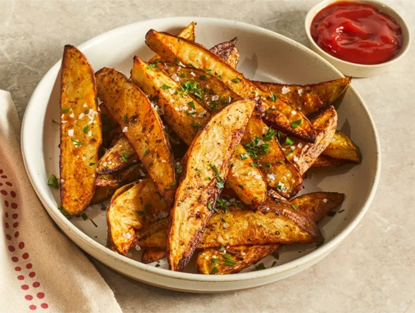

Air Fryer Potato Wedges
Description
Deliciously crispy air-fried potato wedges are perfectly seasoned and ready to serve in just over 30 minutes. It doesn't get any easier than this! Serve with ketchup for a tasty appetizer, or toss with some grated Parmesan for a cheesy potato side dish.
Best Potatoes for Potato Wedges
Opt for a starchy potato variety, such as russet potatoes or Yukon Golds, for perfect results. Avoid waxy potatoes, such as fingerlings, as they won't hold up as well during cooking.
How to Cut Potato Wedges
To cut a potato into wedges, slice the potato in half lengthwise. Place the cut side of the potato onto the cutting board and cut it in half again to create quarters. Repeat with the other half. Now, position each potato quarter with the cut side up and cut down the center of each quarter to create a wedge. Repeat with the other quarters until the entire potato is cut into wedges.
Potato Wedges Seasoning
These potato wedges are seasoned with a savory mixture of paprika, parsley, chili, salt, and pepper. But, these are your potato wedges, so you can get as creative as you want! Spice it up with cayenne pepper or add a little earthiness with herbaceous rosemary. You're only limited to the spices in your pantry.
How Long to Cook Potato Wedges In the Air Fryer
These potato wedges should be perfectly crispy after about 15 minutes (10 minutes on one side, five minutes on the other). If you feel like your wedges aren't crispy enough, you can air fry them for a bit longer on each side — just make sure they don't burn.
Can You Freeze Potato Wedges?
Yes, you can freeze cooked potato wedges. Place (completely cooled) wedges in an airtight freezer bag, squeeze out the excess air, and seal. Label with the date and freeze for up to three months. You don't have to thaw the frozen potato wedges — just reheat them from frozen in the microwave, in an air fryer, or in an oven.
Ingredients
- 2 medium russet potatoes
- 1 ½ tablespoons olive oil
- ½ teaspoon ground paprika
- ½ teaspoon parsley flakes
- ½ teaspoon chili powder
- ½ teaspoon sea salt
- ⅛ teaspoon ground black pepper
Directions
- Gather the ingredients. Preheat an air fryer to 400 degrees F (200 degrees C).
- Cut each potato in half lengthwise. Cut each half in half lengthwise, and then cut each quarter in half lengthwise. You will have 16 wedges. Gather the seasonings.
- Place potato wedges in a large bowl. Add olive oil, paprika, parsley, chili, salt, and pepper; mix until well combined.
- Place 1/2 of the potato wedges in the basket of the air fryer and cook for 10 minutes.
- Flip wedges with tongs and cook for an additional 5 minutes. Remove to a plate. Repeat to cook the remaining wedges.
- Serve hot and enjoy!